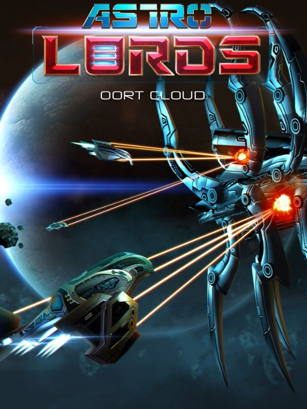

Astro Lords: Oort Cloud
Astro Lords: Oort Cloud
Details
|  | |
| Playtime | Not Played |
| Last Activity | Never |
| Added | 08/02/2016 |
| Modified | Never |
| Completion Status | Not Played |
| Source | Steam |
| Platform | PC |
| Release Date | 15/01/2016 |
| Community Score | 49 |
| Critic Score | |
| User Score | |
| Genre |
Free to Play |
| Developer |
Aratog LLC |
| Publisher |
BISBOG SA |
| Feature |
MMO Multiplayer Single Player |
| Links |
PCGamingWiki Community Hub Discussions Guides Store Page News |
Description
Astro Lords: Oort Cloud is a free-to-play,
science-fiction MMORTS. The game seamlessly combines construction
management with click-and-drag Artillery style combat and strategy
elements such as exploration, raiding and espionage. The game takes
full advantage of stunning Unity 3D graphics to provide a visually
rich experience.
You will take on the role of an Astro Lord, leader of your own asteroids in the Oort Cloud on the fringes of the solar system. As well as vying against other players for dominance in PVP combat, you must also face off against a mysterious alien race which has invaded the Cloud.
Build!
Asteroids are at the heart of your Empire. You begin the game with a home asteroid which you must develop through the construction of facilities such as mines, power plants, factories and laboratories. Resources must be gathered, or stolen, to construct ammunition and cyborgs to fuel your expansion. Secondary asteroids can be added through colonising empty ones, or capturing developed asteroids from your enemies.
Astro Lords: Oort Cloud is the first MMORTS to feature moving bases on a spherical map, putting you in the driving seat. Will you manoeuvre your asteroid in pursuit of your enemies, flee from hostile foes, or explore vast nebulae and alien ruins?
Shoot!
Leading the charge against your enemies are the Captains. You can recruit up to 6 Captains from 7 different classes. Will you recruit a Warrior and focus your efforts on combat? A Scientist, to boost your research output? A Spy, to keep tabs on other Astro Lords and alien bases? With over 50 different skills to develop, you can tailor your Captains to suit your gameplay style. Each Captain can be fully controlled in battle against other players and AI alien enemies, and will fight to defend your base while you're offline too.
Captains and starbases can be improved through skills, runes, artifacts and officers, giving you complete control over your combat style and abilities. The click-and-drag Artillery style combat in Astro Lords: Oort Cloud provides fast-paced real-time combat – think Worms, but without having to wait your turn! Players can choose between a number of different battle modes including Team Deathmatches, Duels, Boss Fights and Alien Challenges.
Raid!
To maintain your power in the Oort Cloud, you'll need to have strong friends and rich enemies. Forge alliances with other players and help defend each other’s asteroids, and send your spies to infiltrate and sabotage enemy bases. Lead daring raids against other players to steal their resources for yourself. Deploy Explorer cyborgs into the Cloud to discover ancient technology and mysterious artifacts. In the Oort Cloud, it's up to you whether you want to be the hero or the villain...
About the Game
Astro Lords: Oort Cloud was inspired by classic games such as Master of Orion, as well as modern MMOs like OGame and Dark Orbit. As an MMO in constant development, Astro Lords: Oort Cloud receives free regular updates containing new game features and improvements.
You will take on the role of an Astro Lord, leader of your own asteroids in the Oort Cloud on the fringes of the solar system. As well as vying against other players for dominance in PVP combat, you must also face off against a mysterious alien race which has invaded the Cloud.
Build!
Asteroids are at the heart of your Empire. You begin the game with a home asteroid which you must develop through the construction of facilities such as mines, power plants, factories and laboratories. Resources must be gathered, or stolen, to construct ammunition and cyborgs to fuel your expansion. Secondary asteroids can be added through colonising empty ones, or capturing developed asteroids from your enemies.
Astro Lords: Oort Cloud is the first MMORTS to feature moving bases on a spherical map, putting you in the driving seat. Will you manoeuvre your asteroid in pursuit of your enemies, flee from hostile foes, or explore vast nebulae and alien ruins?
Shoot!
Leading the charge against your enemies are the Captains. You can recruit up to 6 Captains from 7 different classes. Will you recruit a Warrior and focus your efforts on combat? A Scientist, to boost your research output? A Spy, to keep tabs on other Astro Lords and alien bases? With over 50 different skills to develop, you can tailor your Captains to suit your gameplay style. Each Captain can be fully controlled in battle against other players and AI alien enemies, and will fight to defend your base while you're offline too.
Captains and starbases can be improved through skills, runes, artifacts and officers, giving you complete control over your combat style and abilities. The click-and-drag Artillery style combat in Astro Lords: Oort Cloud provides fast-paced real-time combat – think Worms, but without having to wait your turn! Players can choose between a number of different battle modes including Team Deathmatches, Duels, Boss Fights and Alien Challenges.
Raid!
To maintain your power in the Oort Cloud, you'll need to have strong friends and rich enemies. Forge alliances with other players and help defend each other’s asteroids, and send your spies to infiltrate and sabotage enemy bases. Lead daring raids against other players to steal their resources for yourself. Deploy Explorer cyborgs into the Cloud to discover ancient technology and mysterious artifacts. In the Oort Cloud, it's up to you whether you want to be the hero or the villain...
About the Game
Astro Lords: Oort Cloud was inspired by classic games such as Master of Orion, as well as modern MMOs like OGame and Dark Orbit. As an MMO in constant development, Astro Lords: Oort Cloud receives free regular updates containing new game features and improvements.